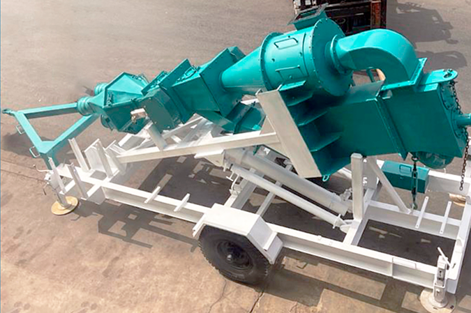

Sobre S.Sahuanay Drilling
"Tu aliado confiable en el alquiler de maquinaria para perforación, donde la calidad, el rendimiento y la excelencia en el servicio se fusionan para impulsar el éxito de tus proyectos y superar tus expectativas en cada perforación"
Nuestra misión:" Proporcionar a nuestros clientes soluciones integrales en el alquiler de maquinaria para perforación, ofreciendo equipos de alta calidad y un servicio excepcional"
Nuestro objetivo: "Ser reconocidos por nuestra calidad, confiabilidad y compromiso, y ser la primera opción para aquellos que buscan resultados excepcionales en cada perforación"
S.Sahuanay Drilling es una empresa dedicada al alquiler de maquinaria para perforación, con una sólida reputación y experiencia en el campo. Ubicada en la carretera central km 22, fundada en 2017, especializada en el alquiler de maquinaria para perforación. Su flota de equipos incluye dos máquinas principales: la LM120, utilizada para perforar, y un ciclón encargado de filtrar.
La LM120 es una máquina de perforación robusta y eficiente que ofrece un rendimiento excepcional. Diseñada para trabajar en diferentes tipos de terreno, cuenta con características hidráulicas garantizan una perforación precisa y eficiente. Por otro lado, el Ciclón incorporado en el proceso de filtrado asegura una separación efectiva de los materiales sólidos, mejorando la calidad de la perforación y reduciendo el desgaste de los equipos.
Nuestra Ubicación
Nuestro establecimiento está ubicado en la carretera central de la ciudad
Diferenciales
- Buena cotización a los clientes
- Máquina hidraulica hasta 500 metros
- Único ciclón en el Perú
- Amplia experiencia